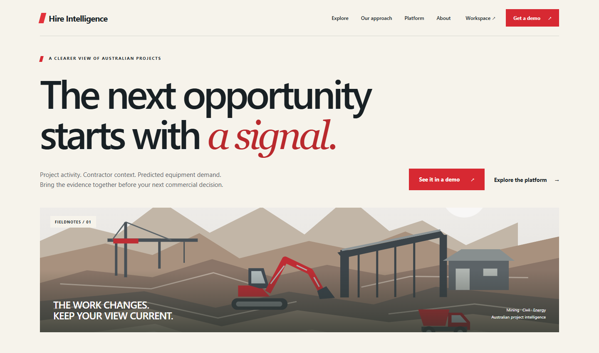
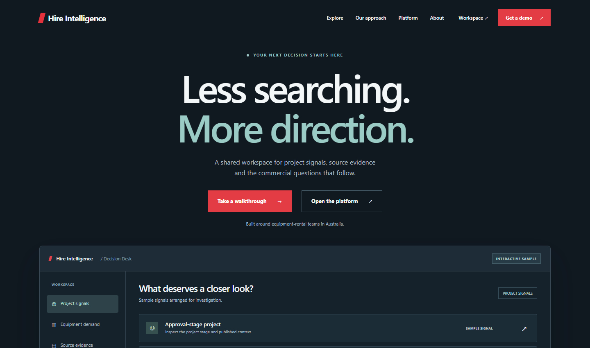
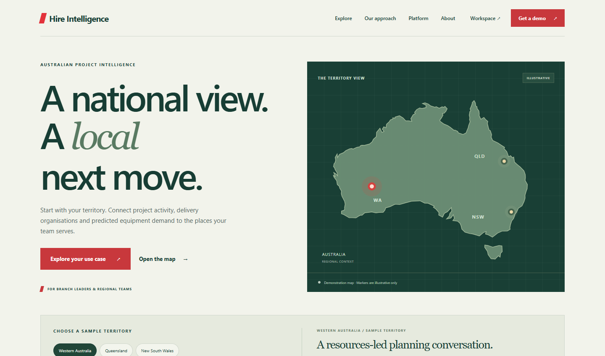
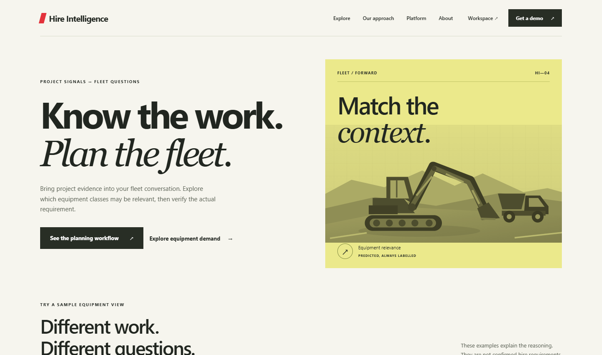
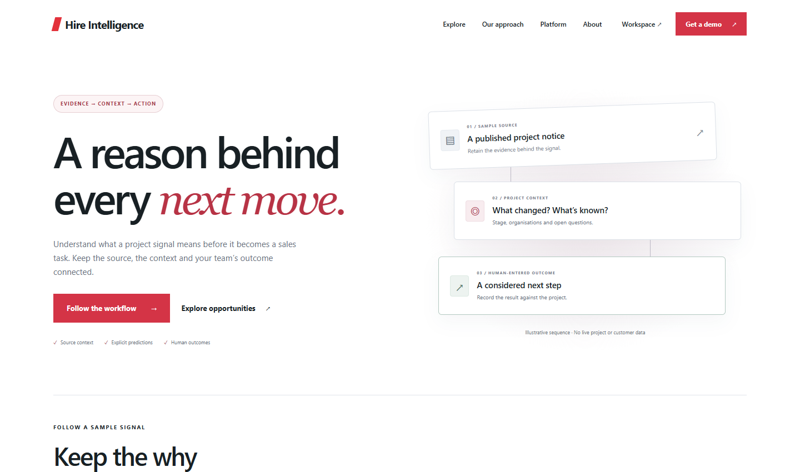

LANDING PAGE EXPLORATIONS / 01—05
One platform.
Five ways in.
Working design concepts for Australian equipment-hire teams. Explore a direction, try its interactions, and see how it could join the current site.
Local previews · Sample content · No data submitted

01 / EDITORIAL
Fieldnotes
Make the market intelligible. A confident, publication-style introduction to the platform.

02 / PRODUCT
Signal Room
Put the workspace first. A direct introduction to the daily decisions the product supports.

03 / REGIONAL
Territory
Start where your team operates. A geographic entry point for branches and regional sales.

04 / EQUIPMENT
Fleet Forward
Connect the work to the equipment. A focused route into predicted fleet demand.

05 / COMMERCIAL
Evidence to Action
Explain the reasoning behind the next call. A clear path from public evidence to recorded outcomes.